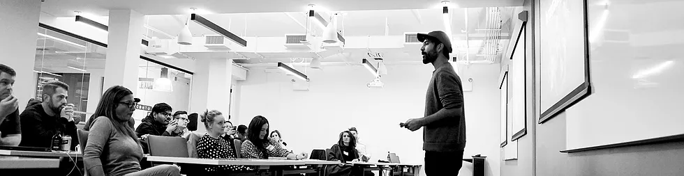
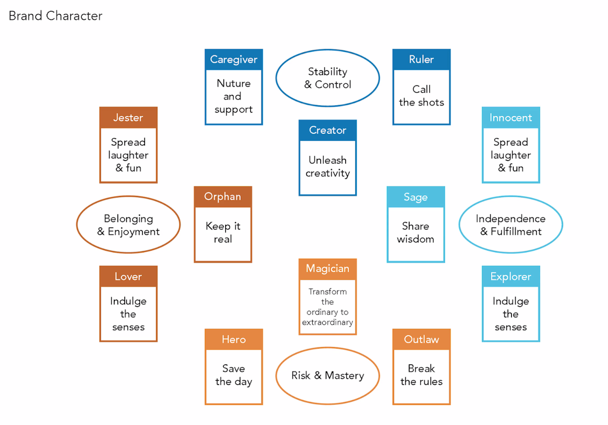
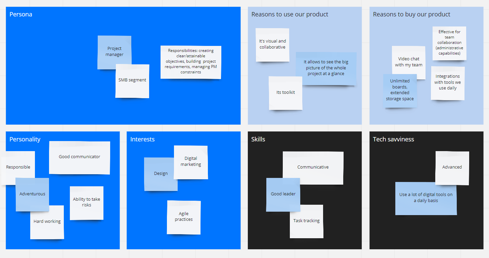
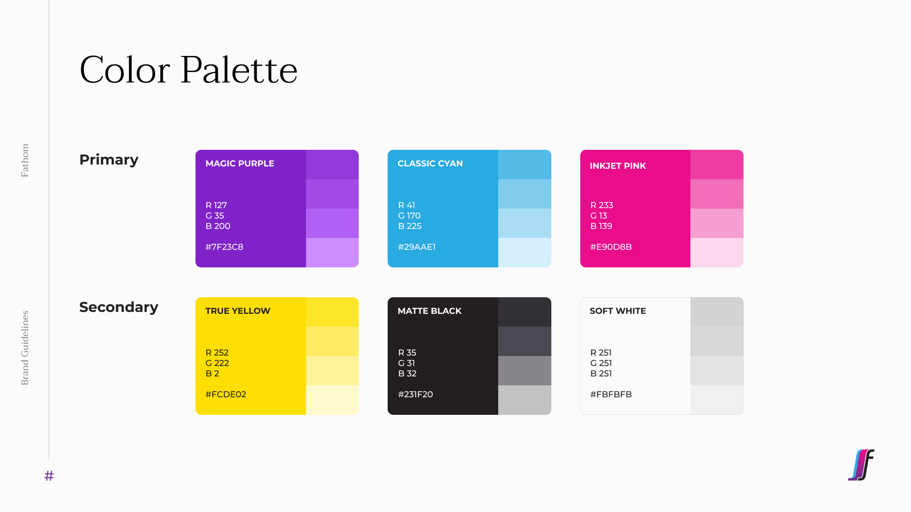
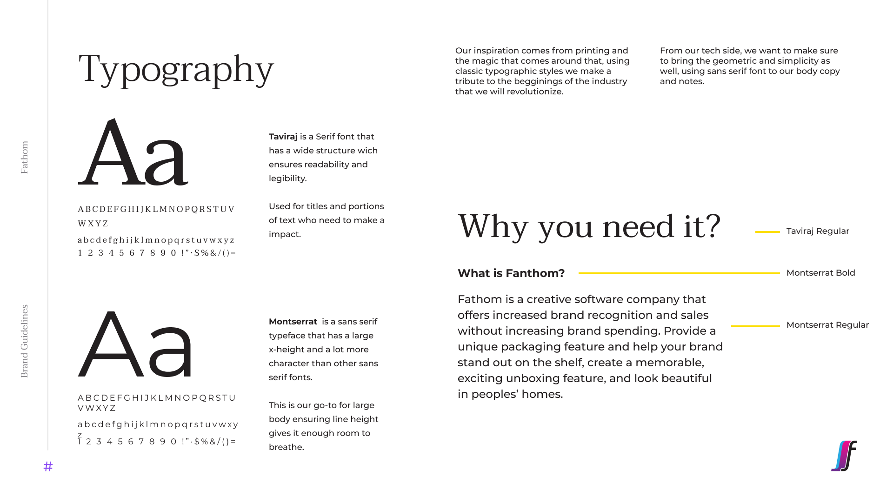
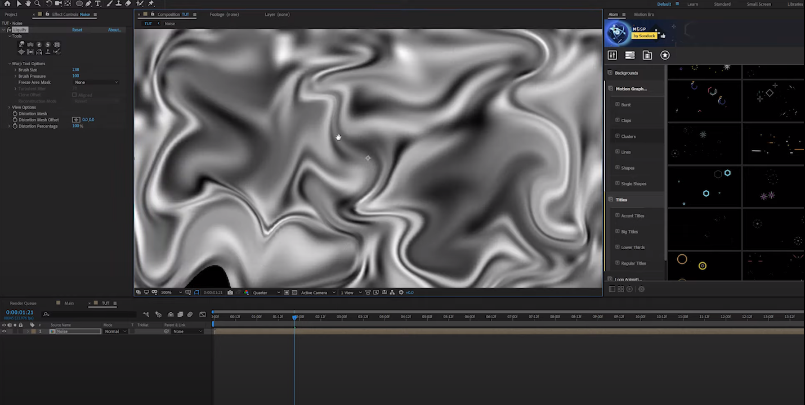
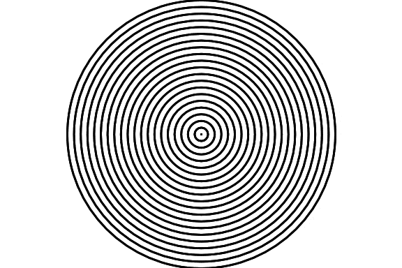
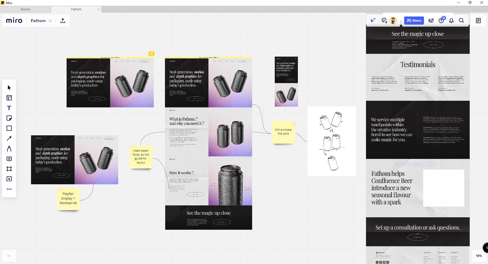

Case Study
(*16 +)
Contents
What is Fathomoptics
What is Brandathon
Team & Timeline
Process
Exploration phase
Design
Usability
Performance
Target Audience
Scope phase
Brand Tone/Voice
Brand Guidelines
Sitemap
Skeleton & Surface
Visual Direction
Final Designs
Moving Forward
WHAT IS FATHOM OPTICS ?
Fathom Optics (formerly LUMII) transitioned from virtual reality to printing labels with depth & motion. Brands, designers, and printing press operators can visualize and create impressive video prints for labels & packaging, using their design platform. With their Light Field technology, they aim to transform the printing, packaging, and graphic design industries. They came to Brandathon to revamp their core design and copywriting.
WHAT IS BRANDATHON ?
Brandathon is a weekend-long branding hackathon featuring creatives from the worlds of design, copy, and strategy competing to rebrand early-stage startups that are being mentored by iconic founders, creative directors, and angel investors.
Brandathon usually has 2 different startups with 2 different creative teams competing against each other. But this time, it was a head-to-head battle between 2 teams designing for one single brand named Buzzoms. And the team with the better redesign wins the Brandathon.

Brandathon usually has 2 different startups with 2 different creative teams competing against each other. But this time, it was a head-to-head battle between 2 teams designing for one single brand named Buzzoms. And the team with the better redesign wins the Brandathon.
TEAM & TIMELINE
Collaborated with 3 different creatives specializing in branding, creative strategy, and copywriting in a 48 hours rebranding session. We came together to design various deliverables for 'Fathom Optics' consisting of the copywriting strategy, brand identity, investor pitch deck, and a redesigned landing page.
PROCESS
Used the ‘User-centered design’ process to create a basic project structure focusing on the user problems. We use design frameworks to create an outline for the project, and due to the time constraint, we used a mix of ‘5 elements of UX Design’ along with ‘User-centered design’ for approaching the Fathom’s design decisions.
EXPLORATION PHASE
As our first step, we spoke with the Fathom team to ensure that we understand exactly what the product offers and how it helps its users while designing for print & packaging. Our meeting ended with a discussion of the deliverables they wanted, and here are the details :
-
Brand Guidelines (colors and fonts, tone direction, manifesto)
-
Web Design (new structure, updated copy, visual elements)
-
Pitch Deck (for potential investors)
-
Communication strategy.
We created a rough timeline, and divided the work amongst ourselves, in order to save time. Day 1 was mostly spent on researching and brainstorming design ideas for Fathom Optics.
We decided to create mood boards exploring color, typography, web layouts and show our ideas to the Fathom team, and see if we were on the same page or not. Me, Fer & Therese went to create those mood boards, while Reagan started working on the brand manifesto.
We presented our mood boards along with the rough branding manifesto to Fathom on our second meeting and asked their opinion on them.
WEB AUDIT
In order to improve upon the old landing page that Fathom Optics had, I analyzed and did a web audit of their site before the end of Day 1, in order to get a head start on Day 2 when designing the website.
The web audit included the following three aspects :
-
Design
-
Usability
-
Performance
DESIGN
The web audit began with an analysis of the design of the existing site. And here are some of the things that we found out during the web audit.
-
There were a lot of accessibility issues throughout the entire website. For starters, background and foreground elements with texts didn't have a sufficient contrast ratio.
-
There were multiple instances where text overlapped over background video without an overlay and thus making it illegible to read.
-
A lack of consistent typography along with mixed alignment issues made it even harder to read the big chunk of texts.
-
Although the website was responsive, yet there were multiple issues with the mobile design. The website display was not optimized for large screen monitors and thereby made it practically unusable.
-
Despite taking so long to load the multimedia files, the background videos could not even be viewed properly on mobile devices.
USABILITY
I used Jakob Nielsen's heuristic evaluation to check the usability of the old website, and here are the things that I found out:
-
Visibility of system statusUsers see a blank screen until the page loads fully. There is no feedback for the user when clicking the Sign-Up, Contact, and other CTA buttons.
-
User control and freedomOnce going to a page inside the website, there's no way to get back to the homepage.
-
Consistency and standardsMixed usage of button hover design for multiple instances. The logo in the top left doesn't take you to the homepage, and this breaks the consistent web design convention, which also prevents users from ever returning to the homepage.
-
Error preventionTextboxes do not provide feedback on internal errors, nor do they help the user prevent them.
-
Recognition rather than recallThe contact form asks users to provide their phone numbers, by breaking them into pieces. The phone number form has a 'Country' tag with a numeric text box to fill it up.
-
Flexibility and efficiency of useWhen a page is scrolled, the menu cannot be accessed without returning to the top of the page. Neither does the page have a button to take users to the top of the page easily.
-
Aesthetics & Minimal designThe big chunk of text is hard to skim through due to a lack of consistent typography and usage of mixed alignment.
-
Help users recognize, diagnose, and recover from errorsThe website does handle page errors by redirecting to a separate page and telling the users what went wrong without any technical jargon. However, it does not provide any suggestions to help or assist the user solve the error. Error codes are displayed to the user when internal errors or server errors occur, regardless of what the cause of the error is.
-
Help and documentationThere's a dedicated search page, but could only be accessed from the error page. The search bar has a limit of characters, forcing users to enter between 4 and 30 characters.
PERFORMANCE
It takes more than 10 seconds to fully load the website on the desktop. Video files and iframes are among the main reasons for this low-speed index.
-
It could have been avoided by lazy-loading the multimedia files, but instead, it shows the user a blank screen, since it loads the whole page all at once.
-
It takes more than 15 seconds for the homepage to be fully interactive on a mobile device. The page-load is not at all reliable or fast enough on mobile networks as there's no proper caching technique used within the website.
TARGET AUDIENCE
As I was working on the Web Audit, Fer and Reagan were creating Fathom's brand tone by researching its target demographic.
In order to better understand the target demographics, they created empathy maps based on :
-
Brands - who should be using fathom for creating amazing packaging
-
Designers - who are looking to stand out in a very competitive field
-
Print shops - who actually create the printing labels and everything
BRAND TONE/VOICE
Reagan worked on brand character and its mapping after going through the empathy maps to set the tone and voice.

And finally, here's the brand tone/voice we decided, keeping in mind that Fathom is a brand of visual appeal, and its amazing unique design should be the highlight.
-
" Tech with a touch of Magic "
-
Adding visual magic to brand packaging.
-
Sparking magical thinking among creatives.
-
Inspiring printers to push clients to produce magic.
-
BRAND GUIDELINES
Following the Fathom team's feedback in regards to our finalized tone and voice, we further refined our design preferences. And for the next step, Fer and Therese started working on the color palette and typography that would form the foundation of the brand guidelines.
For the color palette, we stayed with the traditional CMYK color scheme the brand already had, as well as two additional neutrals - a Soft white and a Matte black.

For typography, the original decision was to maintain a sans serif font for the entire project in order to convey simplicity and modernity. But while showing modernity, we also wanted to convey the brand's traditional roots to print. And so we decided to use both Serif and Sans-Serif. Serif for headings, and Sans-Serif for the copy heavy paragraphs.

At the same time that the Brand Guidelines were being designed, Reagan was already working on the website copy, which will help me get started on the website, for the next phase of designing.
Sitemap
Before starting working on the UI, I reorganized the ‘Structure’ of the landing page, by shifting sections according to the needs of our users, and breaking down the information architecture of the whole site.

VISUAL DESIGN
Going straight to the next phases of UX Design - Skeleton and Surface.
-
The universal idea of using Big header typography to attract and hold the user's attention, while establishing a clear information hierarchy.
-
Using paper as the background to portray the print aspect of the brand. In addition, the folds on the paper serve as a design layout too.
-
With our color palette, we used gradients to appeal to the audience and inspire brands to use eye-catching design and flashy color combinations for their print. (The label and design should appeal to people, and we think our website should do the same)
-
The use of graphical elements in the brand's visual design, such as the Moiré pattern.
-
While our brand aligns with the idea of being a service provider, we chose to design it more like a product-based brand, and thus showcasing how certain products look after using our service.
FINAL DESIGNS
-
Hero SectionThe hero section is broken up into 3 parts to explain what our brand is, what it does, and how it works. Adding a one-line explanation as to the opening text for our brand’s landing page.
Showing our 3d moving print design on a product (here: drink can). Using the paper texture and the Moiré pattern in the background.

-
Try it yourselfAn interactive section for viewing the 3D print design on the product live on the browser. Swiping through the product on a mobile device or dragging it over the desktop rotates the product.

-
Order SamplesProviding the option for users to order sample prints and see the magic for themselves. Upon clicking the main CTA of this section stating ‘Click here to order samples’ redirects to an email form for further details.
-
TestimonialsThis section shares some testimonials about the ways fathom's technology has helped clients to bring their designs to life.

-
Multiple touchpointsThis section explains how fathom helps users by providing them with a variety of services. It talks about the three different value propositions that fathom has for brands, creatives, and print shops.
-
Case studiesShowcasing a case study of how fathom has helped one of their clients and gave them an edge in the market with their exclusive print designs.

-
Get in touch & FooterA dedicated section with a ‘Get in touch’ CTA for viewers with questions about our work, and brand. Simplified the IA and divided the footer links under 3 categories.
-
Company
-
Product
-
Security
-
-
NotificationThe secondary color of Yellow from our brand color palette is used as a link/notification bar.
-
Mobile ResponsiveAll the elements of the web-design were made mobile responsive with a consistent visual language and content architecture.
Moving Forward
Yes, we did finish an entire brand and website redesign in just a weekend with less than 48 hours in hand. However, there are still a few questions to be asked at the end of the day.

-
Was it a successful redesign ?The redesign did rectify quite a few design decisions, but I'm hesitant to say yes. This is a situation in which we need the Fathom team to implement the designs and test them as soon as possible in order to assess the success rate.
-
How to test it ?Testing can be carried out by using heatmaps to track the user's behavior. And maybe it might be useful to add an option where the user can fill up a survey to determine their attitudinal reaction.
We can make incremental changes to the design over time, rather than doing an overhaul again since the main goal of the redesign was to ensure that users could achieve their goal.
-
But, what about the visual design ?
How can we test its success ?Although the aesthetics of a design are subjective, the way we used design thinking to determine color, typography, and layout ensures that the visual design is usable and appealing to our targeted audience.
Nevertheless, we can still experiment with specific aspects of the visual design (for example the signup button) by using A/B tests with some tweaks, and see easily which visual design has a better conversion rate.
Info
Website
fathomoptics.com
Website
brandathon.io
Timeline
Dec ‘20 - 48 hrs
Awards
Winner
Brandathon ‘31
tools
Miro
Adobe XD
Adobe Photoshop
Adobe After Effects
Protopie
Adobe XD
Adobe Photoshop
Adobe After Effects
Protopie
discipline
UI/UX Design
UX Research
UX Research
Contact
(*7 +)